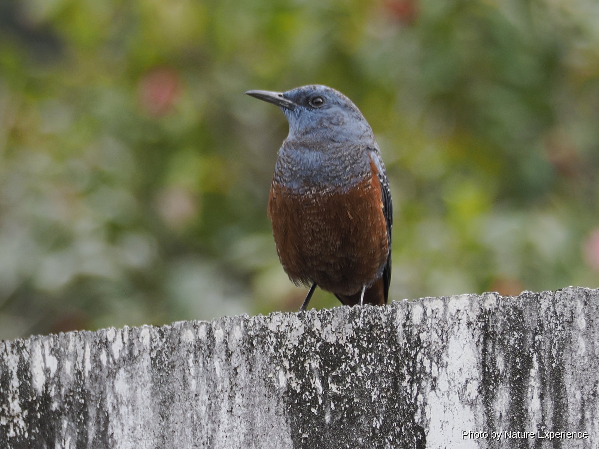
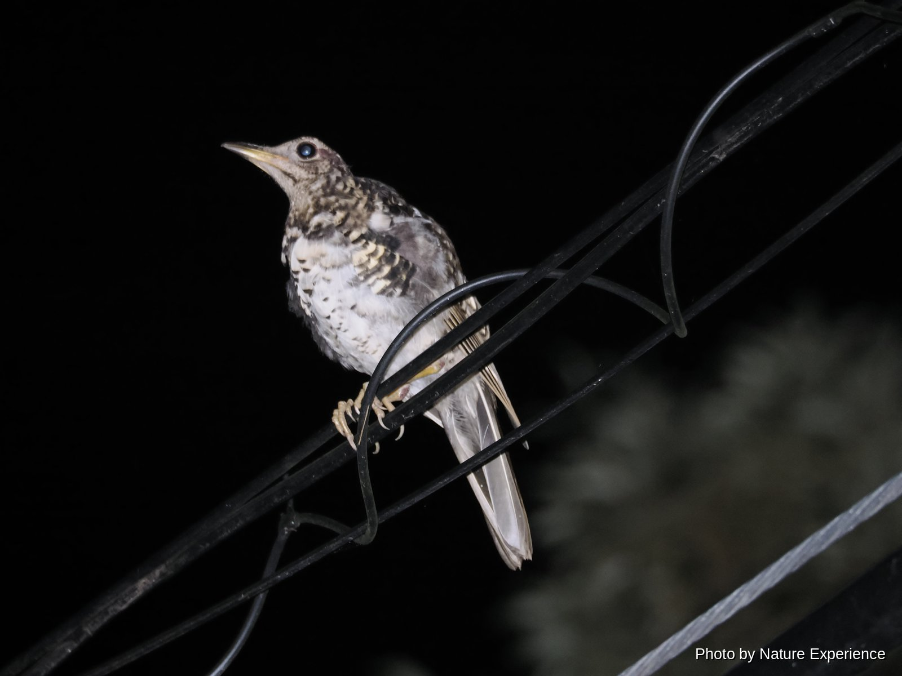
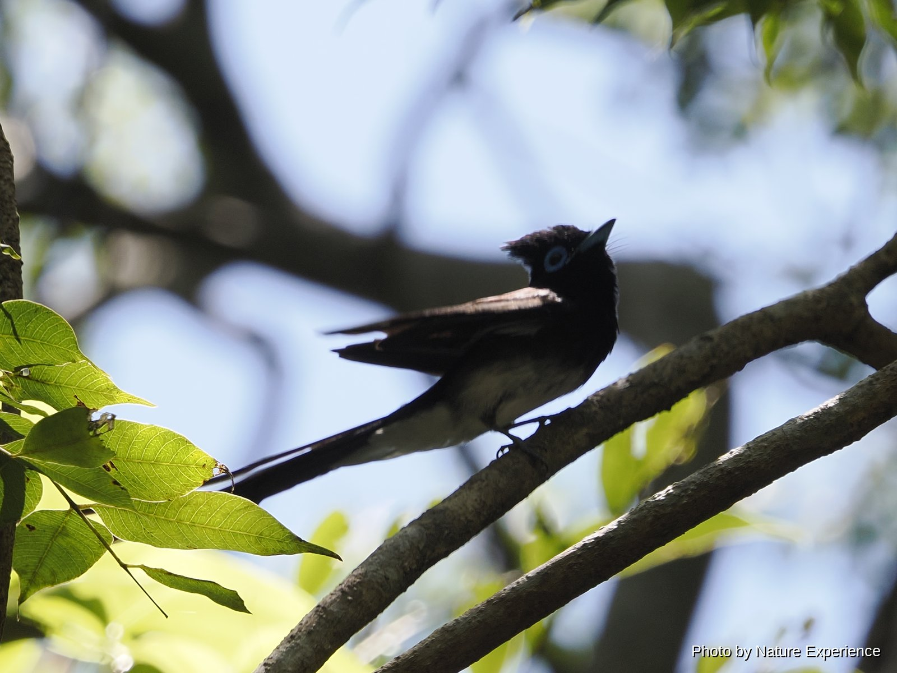
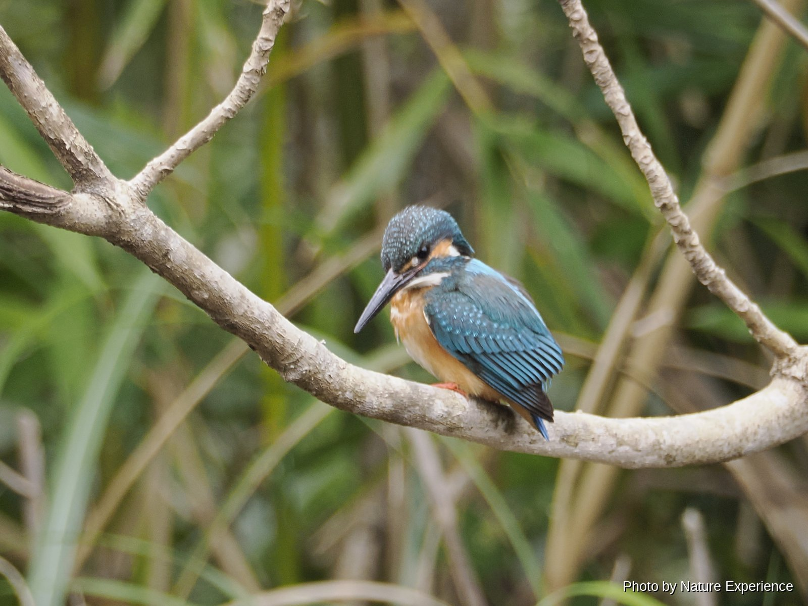
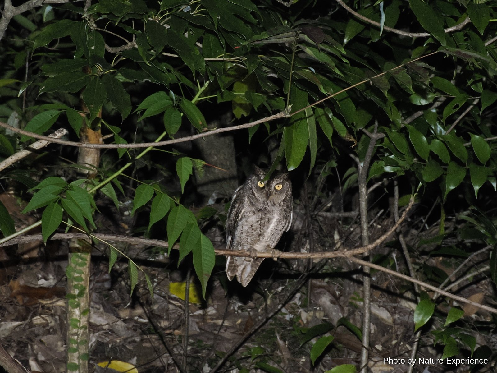
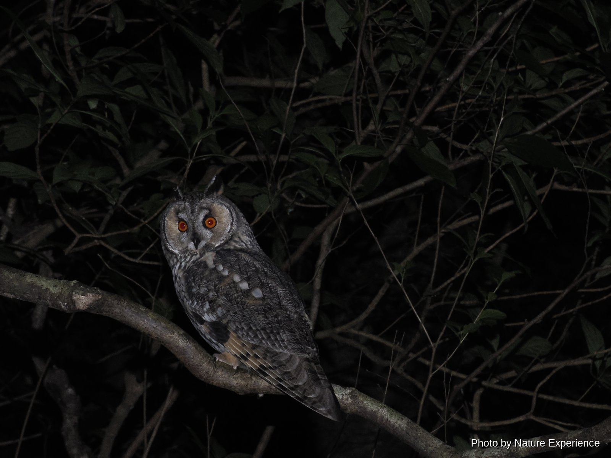
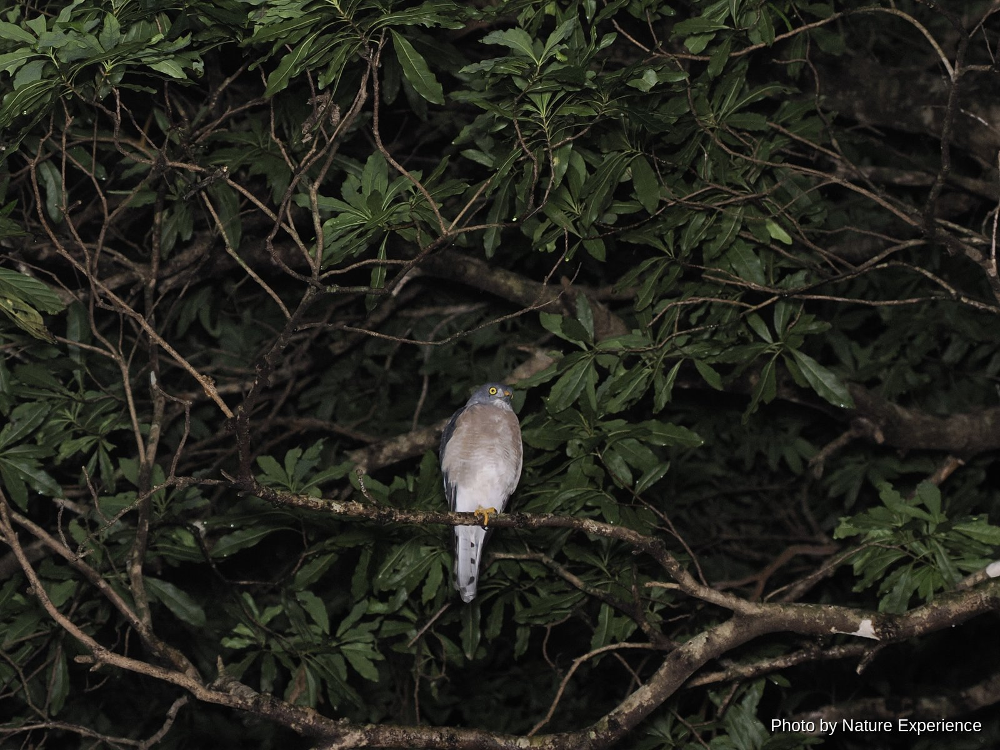
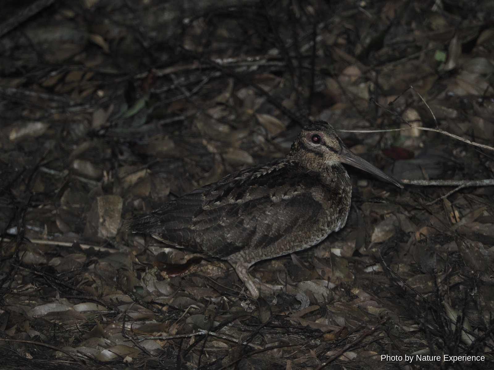
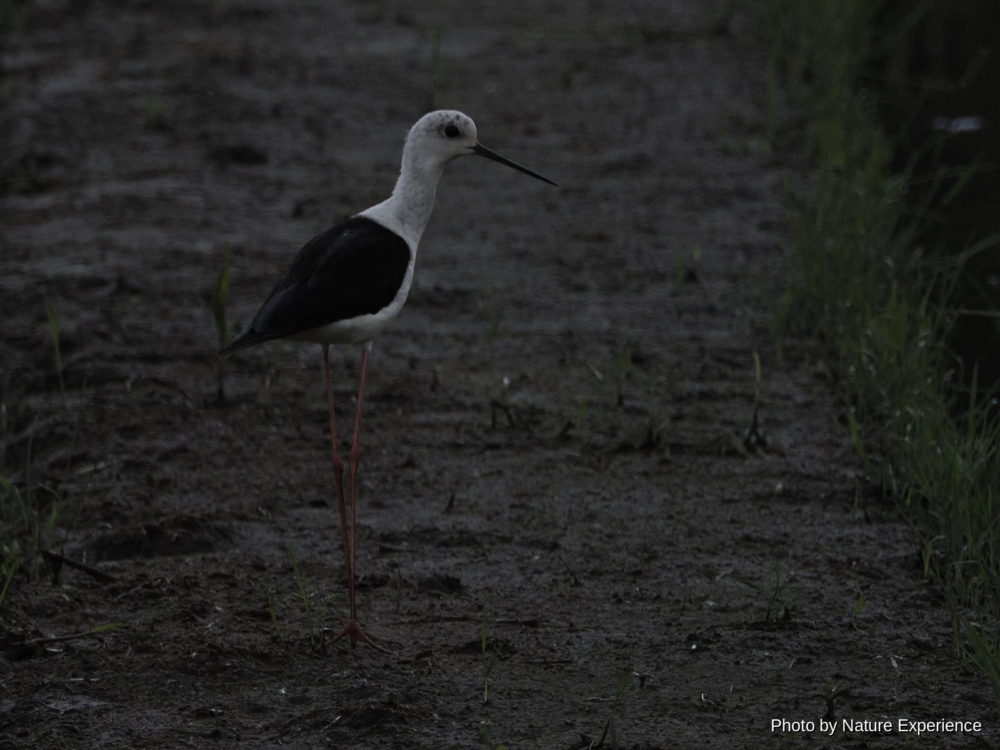
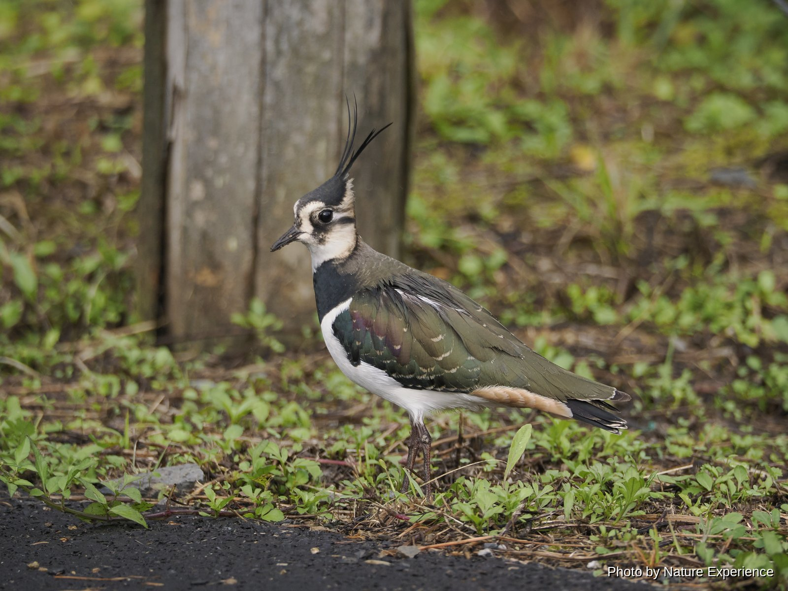

鳥類
―― 雀形目(鶲科、鴉科、壽帶) ――

全長約14公分，體重約18克。從男女群島經吐噶喇列島、奄美大島及其周邊島嶼到德之島一帶 繁殖的日本固有種，1970年被指定為天然紀念物。它是奄美大島的留鳥，一年四季都能見到， 但在3月至6月的繁殖期，雄鳥會格外頻繁地鳴叫以宣示領地，這一時期清晨循著鳴聲尋找最容 易發現它。雄鳥頭部、背部及尾部呈鮮豔的橙紅色，胸部和體側的黑色部分看起來像"鬍鬚"， 這也是其日文名稱的由來。雌鳥整體色調較為樸素。常在常綠闊葉林的林下取食昆蟲。沖繩島 北部棲息著另一近緣種，但兩者的分布範圍並不重疊。
禁止捕獲、轉讓(天然紀念物)
體長約23公分。雄鳥從頭部到背部呈藍色，胸部至尾下覆羽為紅褐色；雌鳥則為灰褐色並帶 有黑褐色鱗狀斑紋，雌雄外觀差異明顯。為奄美大島全年可見的留鳥，正如其日文名(意為 "磯鵯")所示，本來偏好海岸岩礁、港口等磯石環境，但近年來在日本各地都出現向內陸及 市區擴散的趨勢，在奄美也越來越多地出現在民宅屋頂、電線和停車場等生活區域。食性偏 肉食，捕食甲殼類、昆蟲、蜥蜴甚至小型鼠類，鳴聲清亮婉轉。單獨生活，全年占據領地， 繁殖期一般從3月左右開始。
可觀察的生物
全長約30公分。僅分布於奄美大島的留鳥，黃褐色底色上帶有虎斑狀的黑色斑紋。已被指定為 國家天然紀念物及國內稀有野生動植物種。喜歡棲息在樹齡較高的闊葉林陰暗林下，以蚯蚓等為 食。繁殖期為2月至4月初，在黎明前及黃昏的昏暗時段會發出清脆美麗的"叩嚕嗯、唏——"鳴 聲。曾因森林砍伐及外來物種的影響而數量銳減，一度被稱為"幻之鳥"，但近年來隨著森林的恢 復，其種群數量呈現恢復趨勢，2026年3月環境省第5次紅色名錄已將其等級從易危(VU)下調 為近危(NT)。
禁止捕獲、轉讓(天然紀念物)
全長約38公分。僅分布於奄美大島、加計呂麻島及請島的日本固有種，通體琉璃藍色，翅膀呈 紅褐色，喙和翼尖呈白色，十分美麗。1921年被指定為天然紀念物。喜歡棲息在常綠闊葉林， 食性為雜食，以椎樹及常綠櫟樹(青剛櫟類)的果實為食。約從12月起開始築巢準備，繁殖期為2月至5月左右， 在樹洞等處產卵3〜7枚；2月下旬至4月上旬親鳥會在巢附近頻繁活動，是格外容易觀察到它的 時期。曾因野貓及獴(*Urva auropunctata*)的捕食而數量減少，但隨著保護工作取得成效——包括2024年宣布 滅獴成功——近年來種群數量正在恢復。白天活躍地四處飛翔，夜晚則可觀察到它在林道沿線的 電線或樹枝頂端休息的身影。
禁止捕獲、轉讓(天然紀念物)
雄鳥連尾羽全長約45公分，雌鳥約18公分。通體帶黑紫色光澤，眼周和喙呈鮮豔的鈷藍色。 雄鳥擁有近乎體長三倍的長尾羽，飛行姿態十分獨特。在奄美大島作為夏候鳥於4月前後飛 來，常在昏暗的林內枝頭間穿梭跳躍，在空中捕食小蟲、蜂類、蝴蝶等飛行昆蟲。其鳴聲聽 起來像"月、日、星，嗬伊嗬伊嗬伊"，因而以日、月、星三種光芒之意被稱為"三光鳥"。5月 至7月間，它會用苔蘚等材料在樹杈間築成碗狀巢，雌雄共同抱卵育雛。雛鳥離巢前，如在巢 附近長時間逗留或搖晃樹枝，可能導致親鳥棄巢，因此應隔著望遠鏡進行短時間觀察。9月前 後，它會再次飛往東南亞的越冬地。
可觀察的生物―― 佛法僧目(翠鳥類) ――

體長約17公分，體重19〜40克左右的小型翠鳥。頭部至背部呈帶光澤的青綠色，腹部為鮮豔 的橙色，因而被稱為"水邊的寶石"。在奄美大島為留鳥，一年四季都能見到，常出沒於河 流、水田邊的水渠以及各種池塘等淡水環境。它會停在水邊伸出的樹枝或木樁上注視水面， 一旦發現小魚或蝦便會猛地扎入水中捕食。領地意識很強，多單獨或成對活動，在河岸或崩 塌的斜坡土中挖掘橫穴築巢。繁殖期大約在3月至8月，一對繁殖鳥有時會連續育雛數次；求 偶時雄鳥會將小魚遞給雌鳥，稱為"求愛餵食"，這一時期活動格外活躍，也更容易觀察到。 與本網站介紹的大多數鳥類不同，它並非夜間森林的居民，而是少數可以在白天的水邊輕鬆 觀察到的鳥類。
可觀察的生物
全長約27公分，通體呈帶光澤的紅褐色，飛行時腰部的淺藍色斑紋十分顯眼。在奄美大島當 地也被稱為"庫卡魯(Kukkaru)"，因"嘰哦哦哦哦——"般響亮的鳴聲而深受喜愛。它是一種 夏候鳥，通常在黃金周前後的4月末從東南亞的越冬地飛來，9月前後再度南遷離開。雖屬翠 鳥科，但它並不太吃魚，而是廣泛捕食螃蟹、青蛙、蜥蜴及森林中的各種昆蟲。6月至7月的 繁殖期，它會在樹洞或啄木鳥廢棄的舊巢中產下約5枚卵，雛鳥多在7月前後離巢。此時親鳥 會變得格外敏感，靠近巢樹、製造噪音或使用閃光燈拍攝都可能導致棄巢或雛鳥提前離巢， 因此應保持距離、安靜觀察，且不宜逗留太久。
可觀察的生物―― 鴞形目 ――

體長22公分，是日本體型最小的貓頭鷹之一。通體呈褐色，帶有細密的蟲蝕狀斑紋。為留 鳥，分布於奄美大島以南的南西諸島，一年四季都能見到，不僅棲息於成熟的森林，也常見 於人家附近的樹林。夜行性，日落後會反覆發出低沉的"科霍、科霍"叫聲，雌鳥有時會以 "喵"聲應和。以昆蟲、蜘蛛、壁虎等為食。營巢於樹洞、啄木鳥廢棄的舊巢或山蘇花的葉 間，在4月至7月左右的繁殖期產卵4〜5枚。抱卵僅由雌鳥負責，但雌雄會共同承擔育雛的 餵食工作，多數雛鳥在7月前後離巢。離巢前後，雛鳥的飛行能力尚不穩定，有時會停在靠 近地面的樹枝上，此時不應將其撿起或用燈光長時間照射，而應悄悄離開現場。其鳴聲本身 並不限於繁殖期，一年四季均可聽到。
IUCN紅色名錄:近危(NT)
體長35〜40公分左右，頭部長有形似耳朵的長耳羽是其顯著特徵。上體灰褐色至淺褐色並帶 有縱紋，虹膜為橙色。在北海道及本州北部作為夏候鳥繁殖，本州中部以南則主要作為冬候 鳥飛來。奄美大島全年棲息的貓頭鷹僅有琉球角鴞和琉球鷹鴞兩種，長耳鴞與這兩種不同， 每年都有少量個體作為冬候鳥飛來，通常從11月前後開始可見。非繁殖期有集群夜棲的習 性，會聚集在常綠樹或竹叢中。主要捕食老鼠等小型哺乳動物，也吃昆蟲和小鳥。飛抵奄美 大島的數量很少，且警惕性強，觀察難度較高。
可觀察的生物―― 鷹形目 ――

體長約30公分的小型鷹類，不在日本繁殖，僅在春秋兩季遷徙途中經過。上體呈暗青灰色， 下體為淡橙褐色，虹膜雄鳥為暗紅色、雌鳥為黃色。在中國東北至朝鮮半島一帶繁殖，在東 南亞越冬。春季也有遷徙記錄，但奄美大島觀察到較多數量的時期主要在秋季，隨著作為食 物的大島蟬、黃衣蜻蜓等增多，9月中旬至10月迎來遷徙高峰，有時可看到鳥群乘上升氣流盤 旋而上，形成所謂的"鷹柱"。以青蛙、昆蟲、蜥蜴等小動物為食，食性廣泛。IUCN紅色名錄 將其列為無危(LC)，未被列入日本環境省紅色名錄或《瀕危物種保護法》的指定對象。
可觀察的生物
雄鳥全長約47公分，雌鳥約51公分，翼展105〜115公分，屬中型猛禽。頭部灰褐色，背部及 胸部呈茶褐色，喉部為白色並帶有黑色縱紋。主要捕食蛇、蜥蜴、青蛙等小型動物，也吃蟬、 蚱蜢等昆蟲。在九州以北至本州、四國一帶繁殖，繁殖結束後，個體會從9月上旬開始經由西 南諸島南遷前往東南亞。奄美大島作為日本國內最大規模的越冬地而聞名，每年10月中旬前 後迎來遷徙高峰，屆時可看到大量個體在空中盤旋上升、形成所謂的"鷹柱"景觀。許多個體 並未繼續南遷而選擇在島上越冬，據估計每年約有2000隻在11月至翌年3月左右停留。該物種 被環境省紅色名錄列為易危(VU)物種，並列入《瀕危野生動植物種國際貿易公約》附錄II。在 其棲息的林地周邊，應避免大聲喧嘩、突然移動及使用閃光燈拍攝等驚擾個體、致其無謂飛 離的行為，宜在遠處安靜觀察。
日本環境省紅色名錄:易危(VU)―― 鴴形目(鷸科、鴴科) ――

全長約35〜36公分。僅分布於奄美群島和沖繩諸島的日本固有種，已在奄美大島、加計呂麻 島、請島、與路島及德之島確認有繁殖記錄。外形與近緣的丘鷸相似，但腿更長、通體偏黑，體 型比其他鷸類更為敦實。喜歡棲息在常綠闊葉林陰暗的林下地面，從日落到日出期間活動活躍， 在地面覓食蚯蚓和昆蟲。在晨昏的昏暗時段及滿月之夜尤為活躍。繁殖期約為2月至5月，黃昏 時分雄鳥會進行求偶及宣示領地的"展示飛行"，這段時期是全年最容易發現它的時候。在林內 地面築巢，3月至5月左右產卵2〜4枚。1993年被指定為國內稀有野生動植物種。隨著獴類的根除和森林砍伐減少帶來的森林恢復， 其種群數量呈緩慢回升趨勢，2026年3月環境省第5次紅色名錄已將其等級從易危(VU)下調為 近危(NT)。不過野貓的捕食等問題依然存在。
禁止捕獲、轉讓(國內稀有野生動植物種)
體長約37〜40公分，是一種擁有極長的紅色腿和細長黑嘴的鷸類。身體白色，翅膀和背部為 黑色；雄鳥頭後部黑色範圍更大，雌鳥顏色較淺。以水生昆蟲、甲殼類、貝類及小魚為食。 在日本，1975年首次在愛知縣的圍墾地確認繁殖，此後在本州部分地區形成局部定居種群， 但在南西諸島主要作為旅鳥、冬候鳥出現。在鹿兒島縣內，奄美大島、德之島及吐噶喇群島 中之島均有飛抵記錄，鄰近的沖永良部島在2009年曾確認繁殖，但奄美大島本島的繁殖記錄 及具體飛抵時期的記錄較少。喜好干潟、水田、休耕田等淺水環境。環境省紅色名錄曾將其 列為易危(VU)，目前已變更為數據缺乏(DD)。
日本環境省紅色名錄:數據缺乏(DD)
體長32公分，頭上有長長的冠羽，背部呈帶光澤的綠黑色，腹部為白色。因姿態優雅而被 稱為"冬日貴婦"。在歐亞大陸繁殖，作為冬候鳥飛抵日本。在奄美大島，它通常從10月下 旬前後開始出現在水田、旱地等開闊的農耕地，一直停留越冬至翌年3月末至4月左右。常成 群活動，在泥土中覓食蚯蚓和昆蟲。與本網站主要介紹的夜間森林生物不同，它是在白天的 農耕地裡就能輕鬆觀察到的冬季使者。
可觀察的生物